Analista IT en Telecom Personal Argentina, con paso por distintos sectores de la operación y formación universitaria en tecnología, contabilidad y auditoría. Enfocado en el análisis de datos, la mejora continua y el desarrollo de soluciones propias.
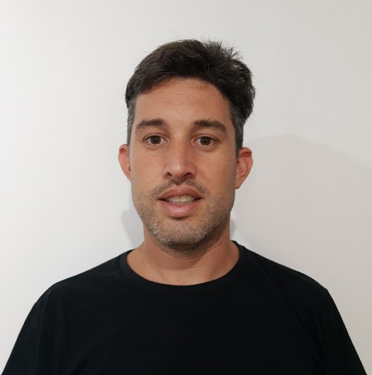
Habilitación y configuración de equipos, gestión sobre cajas FLOW digitales, híbridas y full ip. Gestión de estados de órdenes de trabajo. Manejo de CRM Salesforce Conext y escalamiento de incidencias a segundo nivel. Elaboración de manuales e investigaciones para lanzamientos de aplicaciones internas, y colaboración en informes gerenciales.
Análisis de incidentes en redes HFC / FTTH, asegurando derivaciones precisas y resolución eficiente.
Soporte en tiempo real a técnicos, configuración de equipos y validación de red.
Soporte en infraestructura de red y capacitación en despliegue FTTH.
Atención al cliente y gestión administrativa en sistemas corporativos.
Carrera de 2 años. Primer año prácticamente aprobado en su totalidad.
Duración: 2 años y medio.
Interrumpida por motivos personales, a retomar.
Salesforce, Field Service Management, Huawei U2000, AMS5520 Alcatel, Intraway, ICD, TAU, Toolbox, Itickets, CCIP, ServAssure NXT, Symphonica, SAM, WatchDog, Tambo, Smart, SAP.
MySQL, Android Studio, HTML, Java, JavaScript, CSS, Python, Docker, Apache NetBeans, Eclipse PHP, Visual Studio Code, Firestore, Firebase, APIs, WordPress, GitHub, Postman, Excel avanzado, Power BI, Tango Gestión.
Google Workspace, Slack, Looker, Canva, Bootstrap, Jira, Confluence, Microsoft Teams.
Vanderbilt University – Coursera
2025SQL & BigQuery · Data Analytics · IA Generativa & Prompting · Looker Studio · Metodologías ágiles
2025 - 2026Cisco Networking Academy
202560 horas - Secretaría de Trabajo
Universidad Complutense de Madrid
CESSI
Desarrollo de sitio web orientado a crear un Curriculum Vitae o Portfolio Web estilo Silicon Valley con muestra de enlace a proyectos, estudios y experiencias. Modo oscuro disponible.
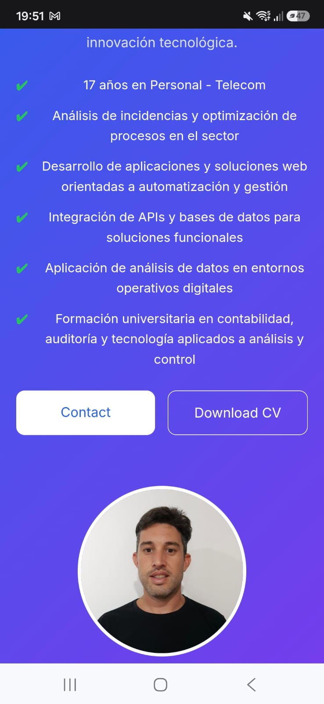
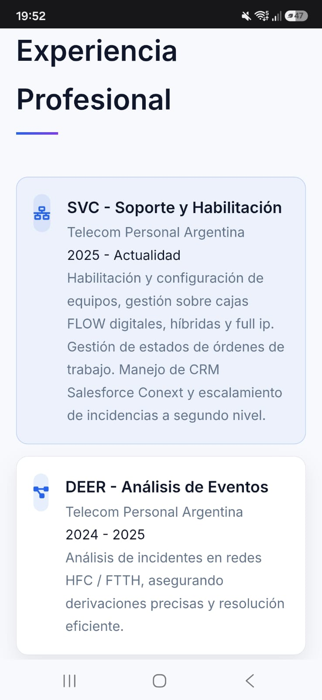
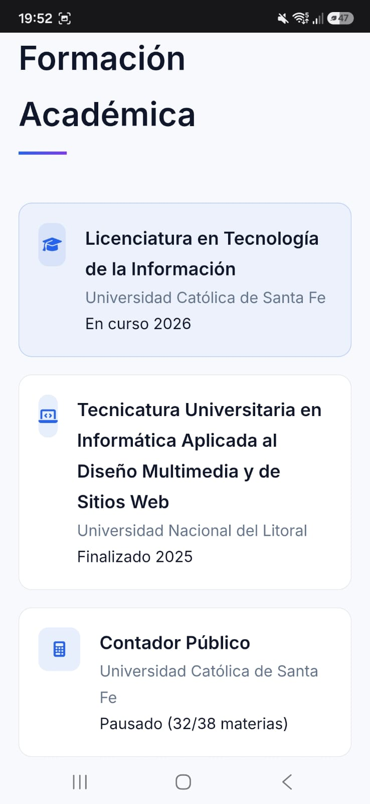
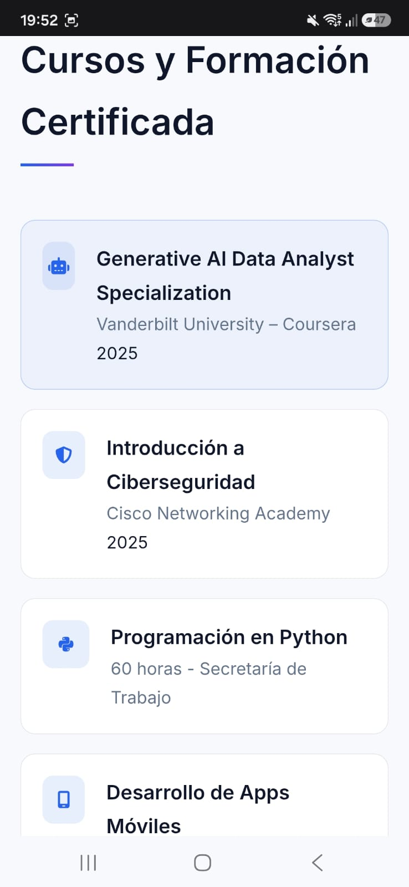
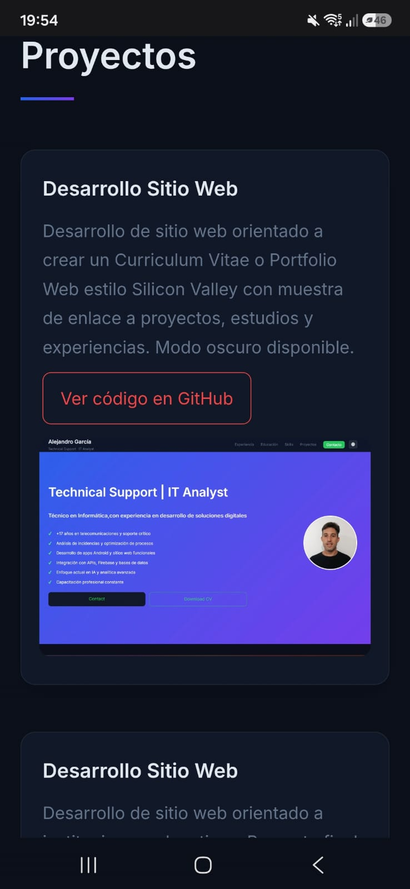
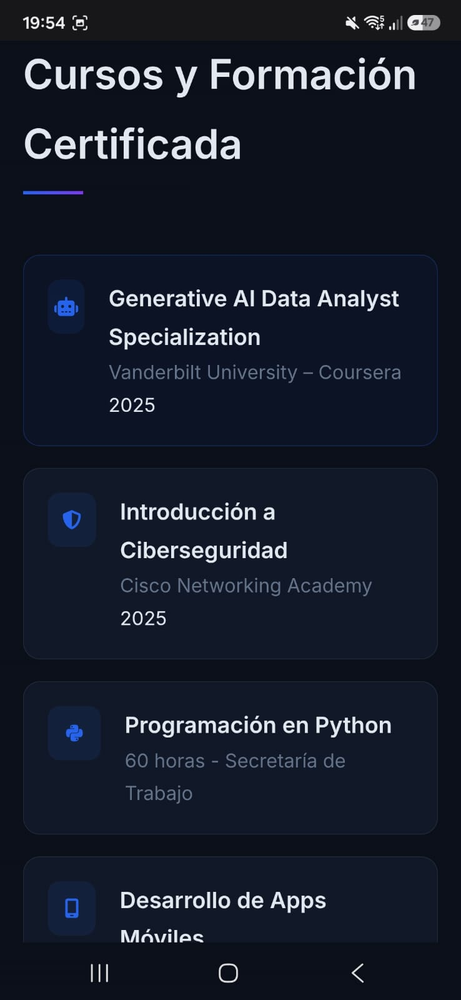
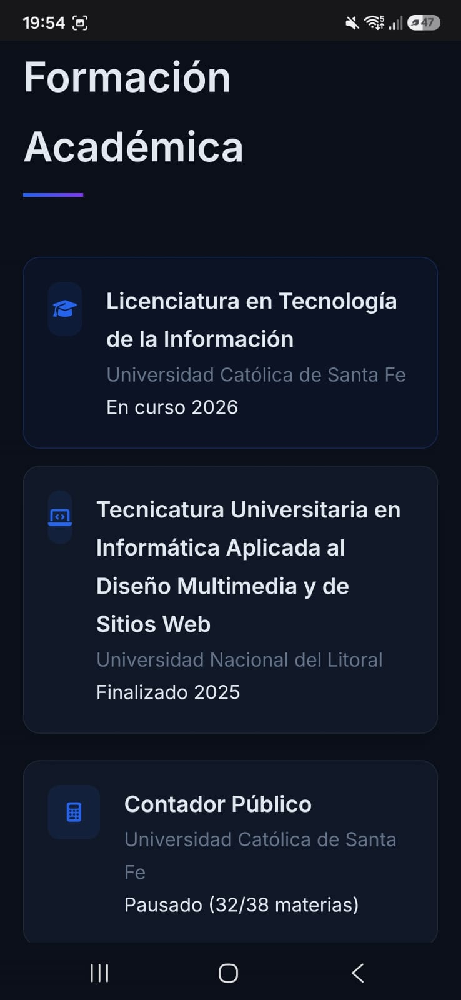
Desarrollo de sitio web orientado a instituciones educativas. Proyecto final de carrera. Universidad Nacional del Litoral.
Desarrollo de aplicación para gestión de actividades en campamentos en Android Studio.
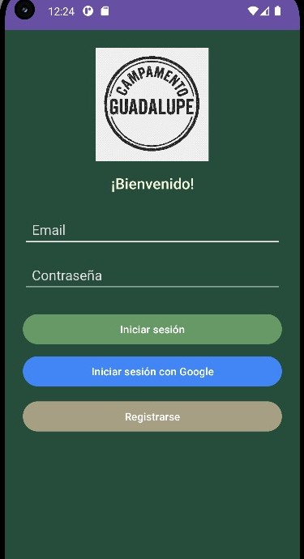
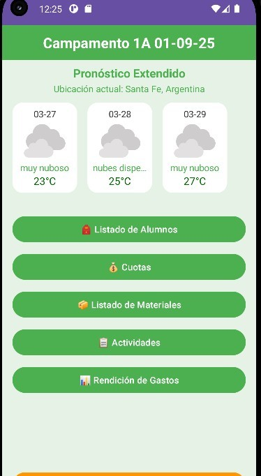
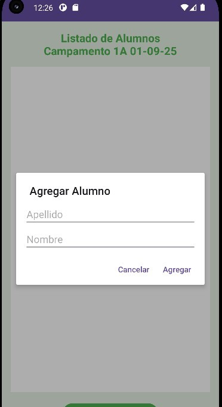
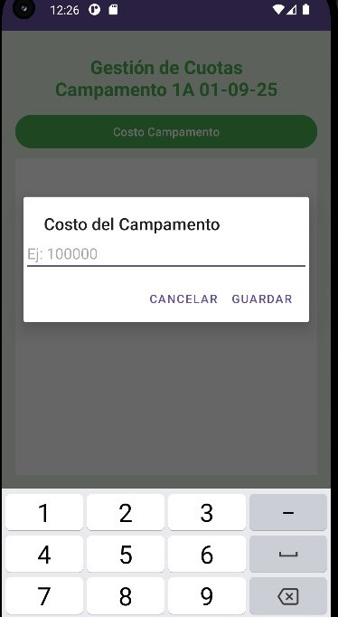
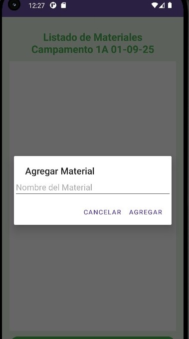
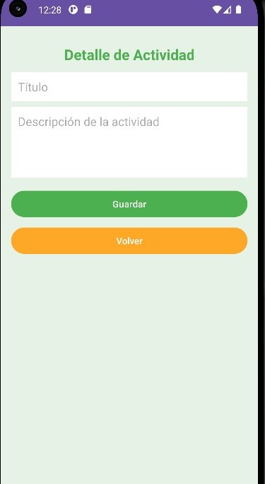
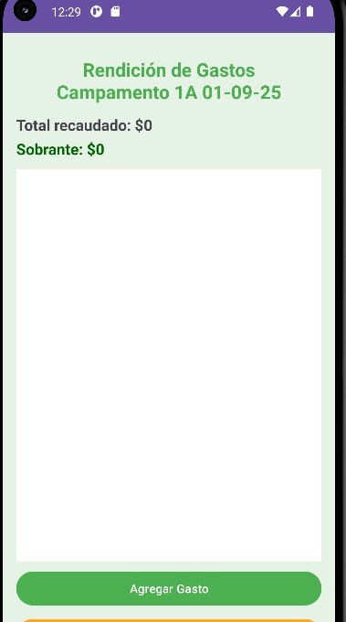
Desarrollo de aplicación para gestión educativa en Android Studio.
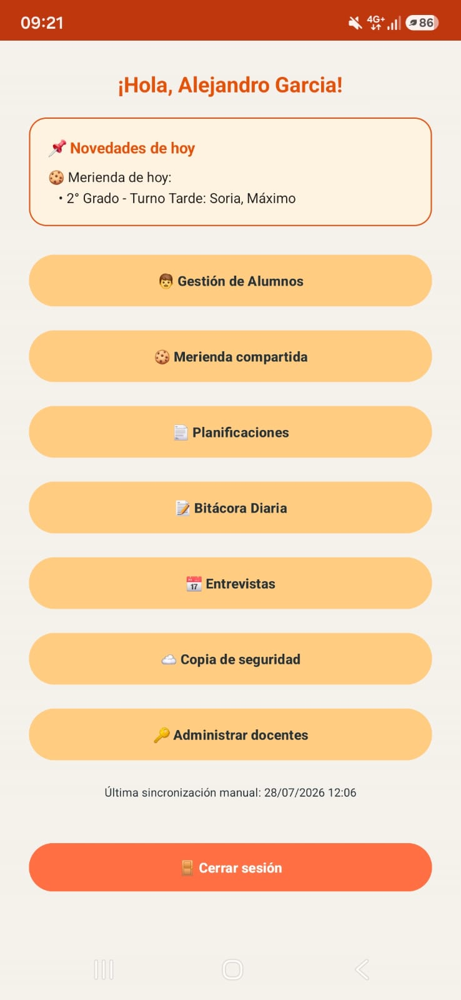
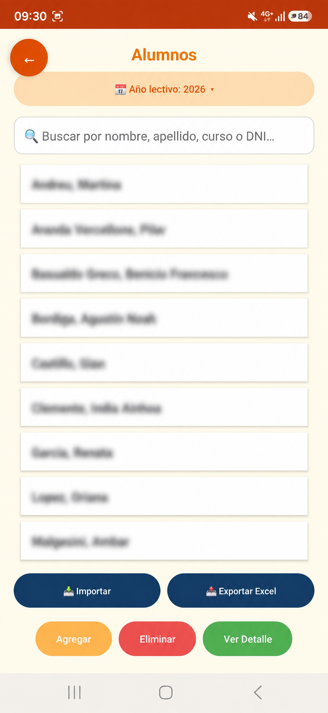
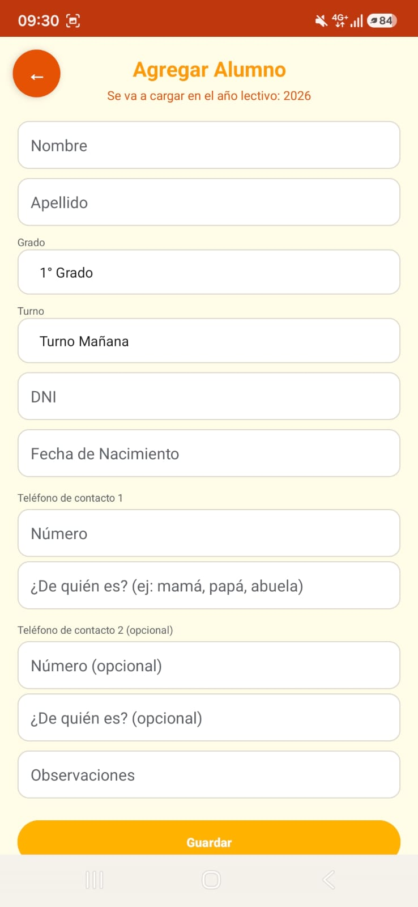
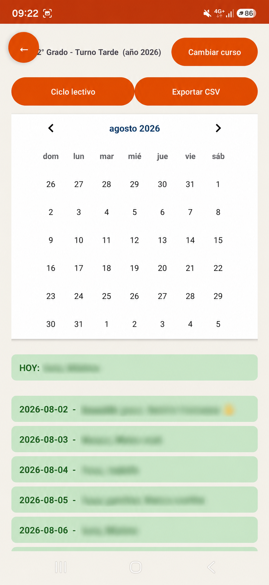
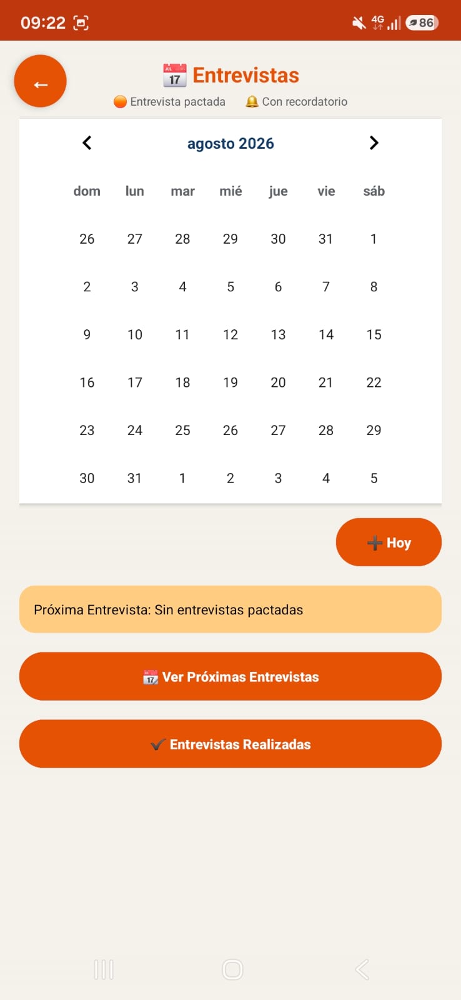
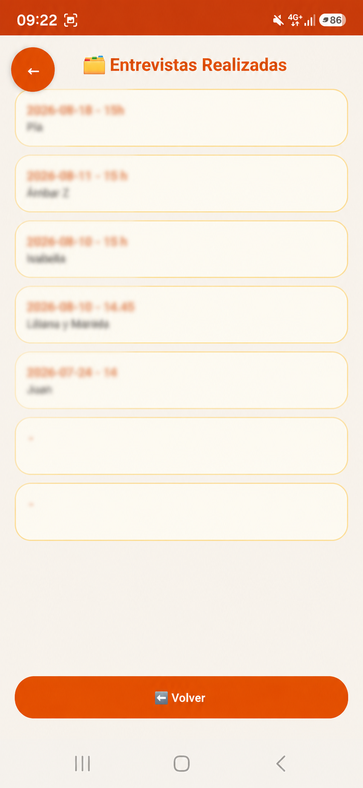
Desarrollo de sitio web relacionado al turismo en Punta del Este (UY) en plataforma WordPress.
App web (PWA) para organizar los torneos de FC26 entre amigos: sorteo o armado manual de equipos, modo "gana y sigue" individual y en parejas, ranking por noche / mes / año con destacados y perdedores. Datos en tiempo real con Firebase Firestore, instalable desde el celular.
App Android nativa (Kotlin) para conectarse por Bluetooth a un adaptador ELM327: ~20 parámetros en vivo (RPM, velocidad, temperaturas, voltaje), lectura y borrado de códigos de falla (DTCs), datos del vehículo, grabación a CSV con marcado de eventos, y una consola para mandar comandos AT/OBD crudos y ver la respuesta tal cual la manda el adaptador.